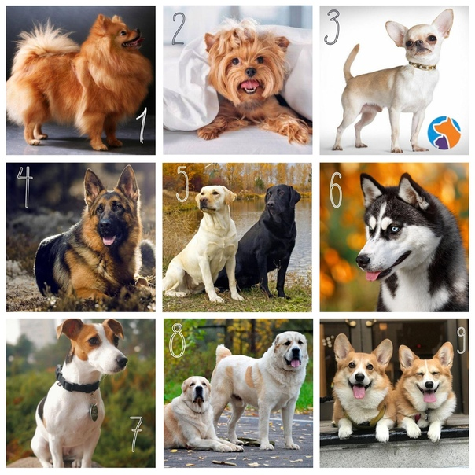
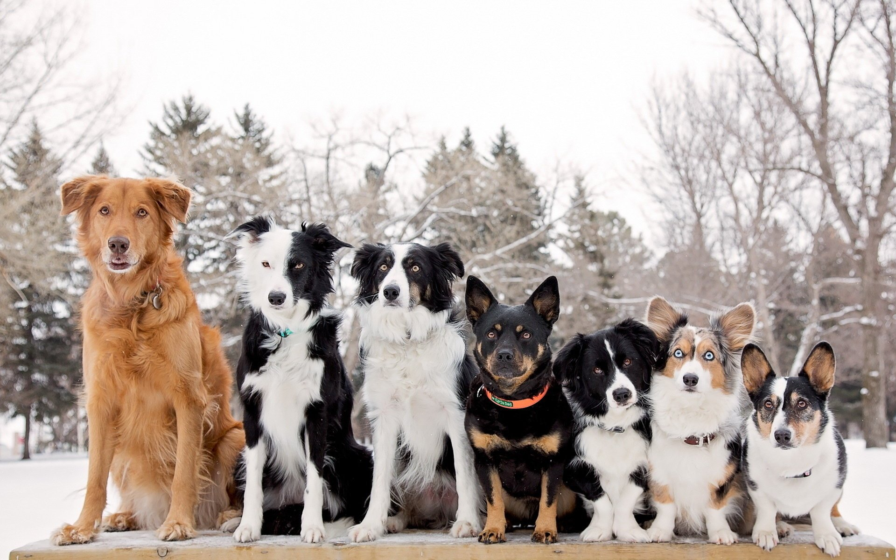

Собаки
Плацентарное млекопитающее отряда хищных семейства псовых.

Собаки известны своими способностями к обучению, любовью к игре, социальным поведением. Выведены специальные породы собак, предназначенные для различных целей: охоты, охраны, тяги гужевого транспорта и другого, а также декоративные породы (например, болонка, пудель).
При необходимости разграничения по полу употребляются термины «кобе́ль» (самец) и «с**а» (самка); в обиходной речи — «пёс» и «собака» соответственно.
Таблица с процентным соотношнием домашних животных, которые заводят люди
| Домашние животные | Процентное соотношение популярности |
|---|---|
| Отсутствуют | 57% |
| Коты | 28% |
| Собака | 10% |
| Рыбки | 5% |
| Грызуны | 4% |
| Тараканы и паучки | 3% |
| Попугай и птицы | 2% |
Из таблицы мы видим, что собаки тоже являются значимыми, ведь идут 2-ыми после котов.